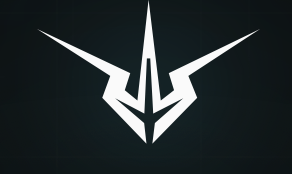

Simply, Ultimate Guitar, Duolingo, Fender and Kahoot. They anchor direct learning, practice habits, learning mechanics, hardware trust and classroom engagement.
Strategic environment map
Music user journey map
Who shapes the path from music inspiration to identity, and where should Yousician focus first?
Discover
Start
Learn
Practice
Create
Share
Identity
Adjust visible map Filter while the map stays in view Show
Map controls
Product lens
1+
Research mode
Seeded structure. Live sources can be attached without changing the UI.
Bubble size defaults to Yousician relevance: company scale weighted by strategic relevance.
Curved arcs mark user journey lanes, not company relationships. Thin centre lines mark Yousician proximity hypotheses, not confirmed partnerships.
Map legend
Colour player's journey step
Logo domain brand mark or initials fallback
Curved arc same journey step area
Size selected scale mode
Source ring source coverage level
AI ring high AI relevance
Thin line Yousician proximity hypothesis
Soft area journey group
Label priority or selected player
Optional visual layer Portfolio landscape by density, pressure, AI relevance, and evidence strength Show
Optional strategic analysis Signals, portfolio lens, AI pressure, and near term research queue Show
Strategic implications
Decision layer
What this means for Yousician
Signals
Research queue
What to watch next
AI and disruption
Last 24 months / next checks
Decision lens
Market monitor
Compare players, category trends, funding signals, reach channels, and metric leaders before opening detailed briefs.
Player decision brief
Executive profile for the selected record.
Market database
Structured market database for players, signals, evidence status, and completion fields.
Revenue, scale and reach stay pending until credentialed data is imported.
| Entity | Strategic role | Classification | Product lens | Scores | Evidence status | Research plan | Yousician angle | Next action | Owner |
|---|
Yousician relationship checks
Internal owner, contact history, sensitivity, and relationship status fields reserved for Yousician completion.
Source status and automation
Data feeds, research imports, and source of truth status for the same structure.
Hidden room unlocked
Volos, the setup shortcut with main character energy.
Congrats. You clicked the faint V. The dashboard has unlocked the room where guitar setup becomes a tiny legend and the cable drawer quietly changes careers.
Congrats
You found the hidden Volos room.
Access granted for one person, several adapters and the part of the dashboard that wanted a personality.

Volos access markLyris is presented as a wireless DSP and app workflow for guitar and bass.
Arrive, plug in, choose a preset, play. The useful part is speed, repeatability and less stage friction. The cable drawer has not commented.
Prototype validation and beta applications are framed around 2026.
That leaves just enough time for musicians to form strong opinions and for every unlabelled adapter to prepare a statement.
Fewer pieces, faster setup, presets, live status and less stage friction.
Musicians want to play, not negotiate with adapters. Volos exists for the exact moment where one more quick setup change becomes a lifestyle.
What the V is doing
A compact workflow idea with suspiciously sharp branding
Sonovia describes Lyris as a wireless setup layer for electric guitar and bass, with presets, receiver side processing and live status. The product is about making sound setup more repeatable. The page is about letting that sentence wear a cape for a minute.
Cables, tone repeatability, stage prep and the ancient ritual of troubleshooting five minutes before playing.
A workflow layer for guitar and bass that tries to make sound setup more repeatable and less dramatic.
Beta interest is positioned around 2026. Several adapters have already denied all allegations.
Messages from the cable drawer
The adapters have requested a meeting
Minutes were taken. Nobody agreed on input impedance.
Volos removes three decisions before anyone can ask where the small black cable went.
Volos: what if the preset remembered your tone instead of your panic choices from last rehearsal?
A compact path from instrument to sound for players who value speed and repeatability.
One adapter claims it was load bearing. Legal is reviewing.
Guitar, bass, tone opinions, latency radar and a sincere desire to stop kneeling behind amplifiers.
Every minute not spent debugging signal flow is a minute available for music or smugness.
Forbidden spreadsheet
Numbers produced by a dashboard that should know better
Method: we looked at a cable and it looked away first.
Assumes the preset is not called final final real one.
Too calm. Someone will ask whether this is allowed.
The mark looks like it already read the roadmap.
Field report
Three moments in the life of one tired musician
"Give me two minutes" says a person surrounded by enough accessories to open a tiny electronics shop.
The app opens. A preset appears. Somewhere, an adapter begins updating its resume.
The first note happens before the spreadsheet can schedule a steering committee.
The mark looks like it arrived from the future to ask why the pedalboard still has onboarding friction.
Volos ranks first in things hidden because the V looked too good to leave unused.
Secondary risk: a guitarist says one more quick change and the room collectively ages.
Take the win. Return to the map before this turns into quarterly planning.